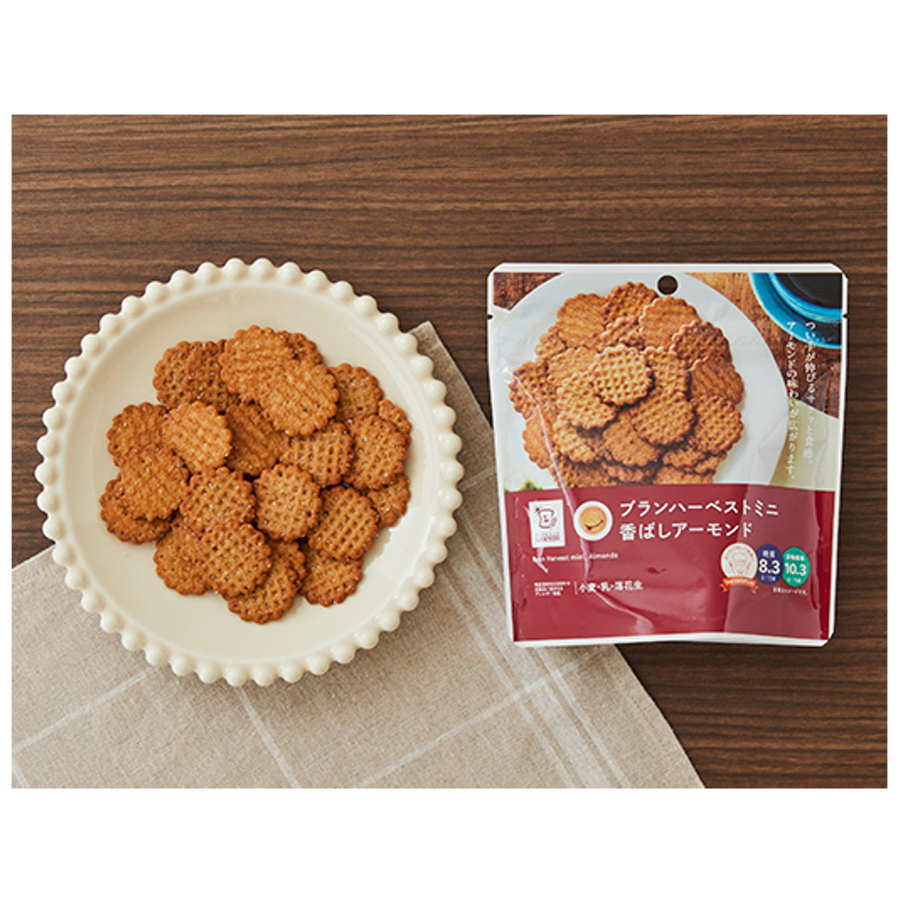
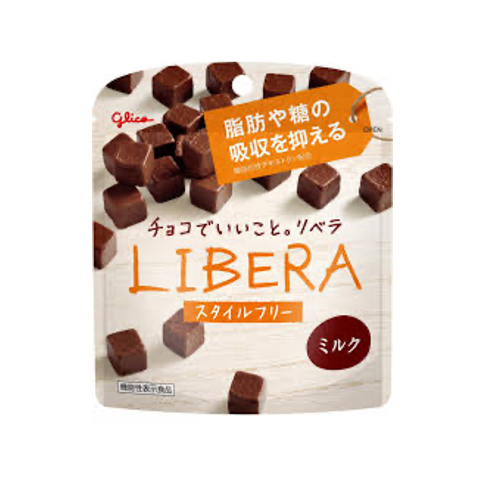

<!DOCTYPE html>
<html>

<head>
    <meta charset="utf-8">
    <meta name="viewport" content="width=device-width">
    <script src="js/jquery-2.1.3.min.js"></script>
    <link rel="stylesheet" href="css/sample.css">
    <title>ロカボ</title>
</head>

<body>

    <header>
        <!-- ヘッダーロゴ　src：画像の場所・alt：画像の代替テキスト -->
        
    </header>

    <main>   
        <audio src="img/ensolarado.mp3" id="music" controls></audio> 

        <p></p>

        <!-- 質問1の文字 -->
        <div class="question1">
            
        </div>


        <!-- ul・li:リスト -->
        <ul>
            <li id="amai_btn"></li>
            <li id="syoppai_btn"></li>          
        </ul>              

        <p></p>

        <!-- 質問2の文字 -->
        <div class="question2">
            
        </div>
        
        
        <!-- ul・li:リスト -->
        <div class="list1">
        <ul>
            <li id="mini_btn"></li>
            <li id="futsu_btn"></li>
            <li id="yuru_btn"></li>              
        </ul>
        </div>  

        <p></p>

        <!-- コンピュータのおすすめは何か？ -->

        <!-- 結果 -->
        <div id="kekka">
            </div>

        <!-- 結果 -->
        <div id="pc1"></div>

    </main>
    <footer></footer>

    <script>
    console.log('冒頭');

    $(document).ready(function() {
        let mikaku = "";

    // 味覚を選択してもらう
    // JQuery ボタンをクリックしたら次の機能を有効にする
    // 定数 mikaku に甘いを入れる
    // 関数 q1 に甘いをいれる
    $("#amai_btn").on("click", function() {
        mikaku = "甘い";
        judgement();       
        });

    // 定数 mikaku にしょっぱいを入れる
    // 関数 q1 にしょっぱいをいれる
    $("#syoppai_btn").on("click", function() {
        mikaku = "しょっぱい";
        judgement();  
        });      

    console.log('味覚選定');

    let toshitsu = "";

    // 糖質量を選択してもらう
    // JQuery ボタンをクリックしたら次の機能を有効にする
    // 定数 toshitsu にミニマムを入れる
    $("#mini_btn").on("click", function() {
        toshitsu = "ミニマム";
        judgement();       
        });

    // 定数 toshitsu にふつうを入れる
    $("#futsu_btn").on("click", function() {
        toshitsu = "ふつう";
        judgement();  
        });      
    
    // 定数 toshitsu にゆるを入れる
    $("#yuru_btn").on("click", function() {
        toshitsu = "ゆる";
        judgement();  
        });  
    
    console.log('糖質量選定');

    // 甘い＆糖質量ミニマムのとき　コンピュータの出し手をランダムに選択
    // 定数rに1〜4の乱数を入れる
    function judgement() {
        let pc1 = "";
    
    if (mikaku == "甘い" && toshitsu == "ミニマム") {
        const r = Math.ceil(Math.random() * 4);
    
    // 定数pcに代入する
    // r=1の場合，pcにチーズを代入する    
        if (r == 1) {
            pc1 = "チーズ";
            $("#pc1").html('');

        // r=2の場合，pcにチョコを代入する
        } else if (r == 2) {
            pc1 = "チョコ";
            $("#pc1").html('');

        // r=3の場合，pcにキャラメルを代入する        
        } else if (r == 3) {
            pc1 = "キャラメル";
            $("#pc1").html('');

        // r=4の場合，pcにきなこを代入する       
        } else if (r == 4) {
            pc1 = "きなこ";
            $("#pc1").html('');
        }

    } else if (mikaku == "甘い" && toshitsu == "ふつう") {
        const r = Math.ceil(Math.random() * 4);
    
    // 定数pcに代入する
    // r=1の場合，pcにスナオプレーンを代入する    
        if (r == 1) {
            pc1 = "スナオ";
            $("#pc1").html('');

        // r=2の場合，pcにスナオチョコを代入する
        } else if (r == 2) {
            pc1 = "スナオチョコ";
            $("#pc1").html('');

        // r=3の場合，pcにローソンチョコを代入する        
        } else if (r == 3) {
            pc1 = "ローソンチョコ";
            $("#pc1").html('');

        // r=4の場合，pcにハーベストを代入する       
        } else if (r == 4) {
            pc1 = "ハーベスト";
            $("#pc1").html('');
        }
        
    } else if (mikaku == "甘い" && toshitsu == "ゆる") {
        const r = Math.ceil(Math.random() * 2);
    
    // 定数pcに代入する
    // r=1の場合，pcにリベラを代入する    
        if (r == 1) {
            pc1 = "リベラ";
            $("#pc1").html('');

        // r=2の場合，pcにリベラナッツを代入する
        } else if (r == 2) {
            pc1 = "リベラナッツ";
            $("#pc1").html('');
        }

    } else if (mikaku == "しょっぱい" && toshitsu == "ミニマム"||mikaku == "しょっぱい" && toshitsu == "ふつう"||mikaku == "しょっぱい" && toshitsu == "ゆる") {
        const l = Math.ceil(Math.random() * 4);

        if (l == 1) {
            pc1 = "麻辣";
            $("#pc1").html('');
        } else if (l == 2) {
            pc1 = "パスタスナック";
            $("#pc1").html('');      
        } else if (l == 3) {
            pc1 = "ナッツ";
            $("#pc1").html('');    
        } else if (l == 4) {
            pc1 = "チーズスナック";
            $("#pc1").html(''); 
        }}}

    console.log('お菓子選定');
    });

    </script>
    </body>

</html>